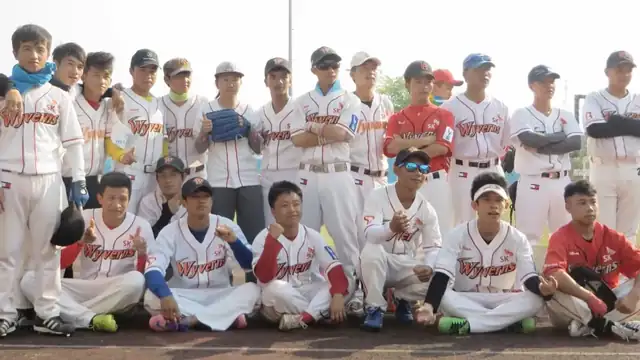
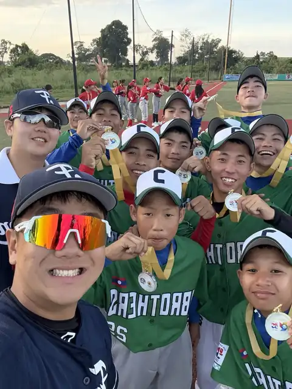
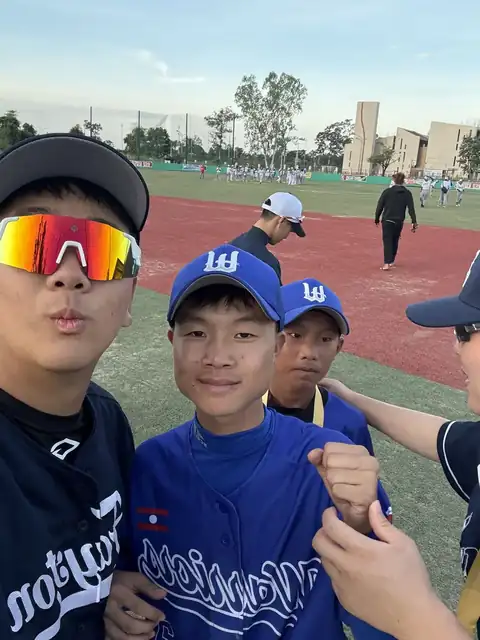
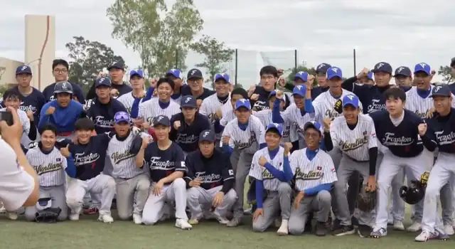
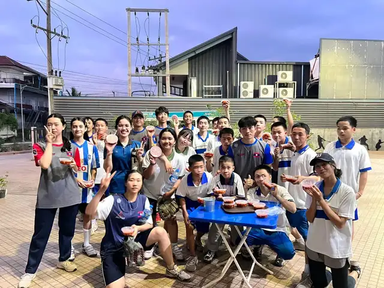
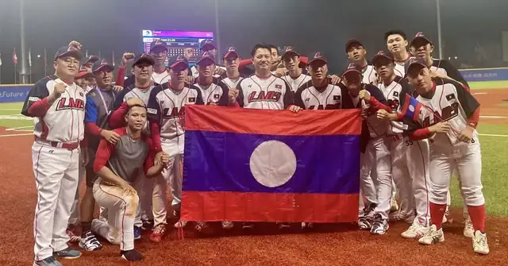

Co-President
Laos National Baseball Team
A young team with big dreams.
Baseball is still new in Laos. The players we support train with limited equipment, facilities, and nutrition — and keep showing up anyway.
Their Story
Built from the ground up.
Organized baseball in Laos began in the 2010s, when Korean volunteers — including former KBO player and manager Lee Man-soo — helped found the Lao Baseball Association, recruit players, and build the country's first baseball field.
Since then, the national team has grown from losing heavily at its Asian Games debut to winning its first international games. What they still need most is steady support: good meals, equipment, and a stable training environment.





Video
Meet the team
Milestones
How far they've come
2018
Asian Games debut in Jakarta — the team's first major international tournament.
2019
The Lao Baseball Federation becomes a member of the World Baseball Softball Confederation (WBSC).
2023
First international wins at the East Asian Baseball Cup (vs. Cambodia and Malaysia), and a win over Singapore at the Hangzhou Asian Games.

Why We Help
Players can't train on an empty stomach.
Base on Hope focuses on one concrete need: meals. The funds we raise through our campaigns and fundraisers are sent to the team's coach to support players' meals and training, and we check in with the team to see the difference it makes.
Support the TeamWho We Are
Founders
Co-President
Gyumin Jeong
정규민Vice President